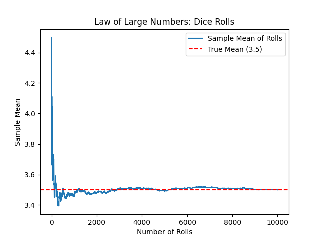
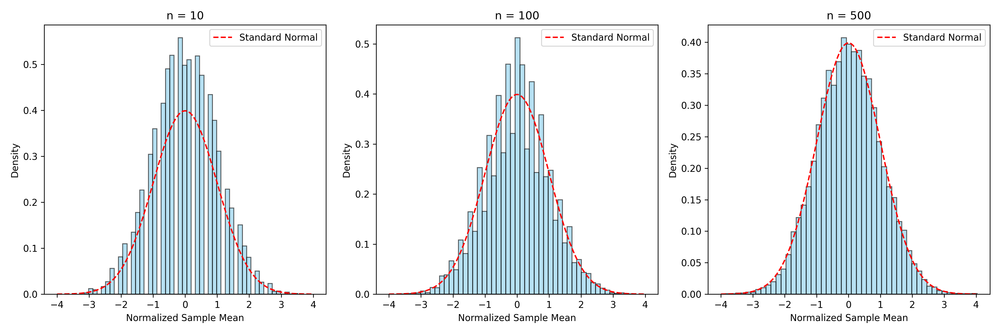

Section1.9Law of Large Numbers and Central Limit Theorem
The Law of Large Numbers (LLN) and Central Limit Theorem (CLT) are foundational results in probability and statistics, underpinning many inferential techniques. The LLN ensures that sample averages converge to the population mean, while the CLT describes the distribution of those averages as approximately normal for large samples. This section provides a detailed yet accessible exploration of these theorems, their assumptions, and their applications.
The Setup:
Consider a sequence of independent and identically distributed (i.i.d.) random variables \(X_1, X_2, \dots, X_n\text{,}\) each with the same probability distribution, mean \(\mu = E[X_i]\text{,}\) and variance \(\sigma^2 = \text{Var}(X_i) = E[X_i^2] - \mu^2\text{,}\) where \(E[\cdot]\) denotes the expected value. These are called the true mean and true variance. We define the sample mean as:
The sample mean \(\bar{X}_n\) is itself a random variable with its own distribution. For example, if \(X_i\) is a Bernoulli random variable with \(X_i \in \{0, 1\}\) and \(p = 0.5\text{,}\) then \(\bar{X}_n\) takes values in \(\{0, \frac{1}{n}, \frac{2}{n}, \dots, 1\}\text{.}\) The LLN and CLT describe the behavior of \(\bar{X}_n\) as \(n\) increases.
The LLN and CLT require that the \(X_i\) are i.i.d. with finite mean \(\mu\text{.}\) The CLT additionally requires finite variance \(\sigma^2\text{,}\) and the Strong LLN requires a slightly stronger condition on the moments of \(X_i\text{.}\)
Subsection1.9.1Law of Large Numbers
The LLN addresses the question: What happens to the sample mean \(\bar{X}_n\) as the sample size \(n\) grows large? It comes in two forms: the Weak LLN and the Strong LLN, which differ in their modes of convergence.
Weak LLN: The Weak LLN states that the probability that \(\bar{X}_n\) deviates from the true mean \(\mu\) by more than any positive amount \(\epsilon\) approaches zero as \(n \to \infty\text{:}\)
This is called almost sure convergence, a stronger condition implying that almost all sample paths of \(\bar{X}_n\) converge to \(\mu\text{.}\)
Intuitive Example: Consider tossing a fair coin with \(P(\text{heads}) = 0.5\text{,}\) so \(X_i = 1\) for heads and \(0\) for tails, with \(\mu = E[X_i] = 0.5\text{.}\) For \(n = 1\text{,}\)\(\bar{X}_1 = X_1\) is either 0 or 1. For \(n = 10\text{,}\) suppose we observe 7 heads, so \(\bar{X}_{10} = 7/10 = 0.7\text{.}\) For \(n = 100\text{,}\) we might get \(\bar{X}_{100} \approx 0.51\text{,}\) and for \(n = 10,000\text{,}\)\(\bar{X}_{10,000} \approx 0.5002\text{.}\) As \(n\) increases, \(\bar{X}_n\) gets closer to \(\mu = 0.5\text{,}\) illustrating the LLN. The Strong LLN guarantees this convergence occurs almost surely.
Visualization: The following figure shows the sample mean of rolls of a fair six-sided die (with true mean \(\mu = (1+2+3+4+5+6)/6 = 3.5\)) for increasing \(n\text{,}\) converging to \(3.5\text{.}\)

Figure1.9.1.Illustration of the Law of Large Numbers: Sample means of fair six-sided die rolls converge to the true mean \(\mu = 3.5\) as \(n\) increases.
Subsection1.9.2Central Limit Theorem
The CLT states that for i.i.d. random variables \(X_1, X_2, \dots, X_n\) with finite mean \(\mu\) and variance \(\sigma^2\text{,}\) the distribution of the sample mean \(\bar{X}_n\) becomes approximately normal as \(n\) increases:
The CLT is remarkable because it holds regardless of the underlying distribution of \(X_i\) (e.g., Bernoulli, exponential, or normal), as long as \(\mu\) and \(\sigma^2\) are finite. This explains why normal distributions appear in phenomena like measurement errors, test scores, or heights, which are aggregates of many small random effects.
Example: For an exponential distribution with rate \(\lambda = 1\) (mean \(\mu = 1\text{,}\) variance \(\sigma^2 = 1\)), the sample mean of \(n = 100\) observations is approximately \(\mathcal{N}(1, 1/100)\text{.}\) The CLT allows us to compute probabilities, such as \(P(\bar{X}_{100} < 1.1)\text{,}\) using the normal distribution.
Visualization:Figure 1.9.2 shows histograms of \(\bar{X}_n\) for a fair six-sided die for different sample sizes, illustrating convergence to a normal distribution.

Figure1.9.2.Histograms of sample means of fair six-sided die rolls for \(n = 10, 100, 500\text{,}\) visually showing convergence to a normal distribution per the CLT.
Subsection1.9.3LLN vs. CLT
The LLN and CLT are complementary:
LLN: Ensures that \(\bar{X}_n \to \mu\) (in probability or almost surely), describing the convergence of the sample mean to the true mean.
CLT: Describes the distribution of fluctuations around \(\mu\text{,}\) stating that \(\sqrt{n} (\bar{X}_n - \mu) / \sigma \xrightarrow{d} \mathcal{N}(0, 1)\text{,}\) with deviations of order \(1/\sqrt{n}\text{.}\)
In essence, the LLN tells us where the sample mean goes, while the CLT tells us how it fluctuates around that value.
Subsection1.9.4Berry-Esseen Theorem
The CLT states that \(\bar{X}_n\) is approximately normal for large \(n\text{,}\) but how large must \(n\) be? The Berry-Esseen Theorem quantifies the rate of convergence. Let \(S_n = \frac{X_1 + \cdots + X_n - n\mu}{\sigma \sqrt{n}}\) be the standardized sum, with CDF \(F_n(x) = P(S_n \leq x)\text{.}\) The theorem states:
where \(\rho = E[|X_i - \mu|^3]\) is the third absolute moment, \(\Phi(x)\) is the standard normal CDF, and \(C\) is a constant (\(C \leq 0.4748\text{,}\) Shevtsova 2011). This implies that the error in the normal approximation decreases as \(1/\sqrt{n}\text{,}\) modulated by the “tail-heaviness” factor \(\rho / \sigma^3\text{.}\)
For example, for a fair six-sided die, \(\rho\) is finite, and for \(n = 100\text{,}\) the approximation error is small, ensuring reliable use of the CLT in practice.
Subsection1.9.5Why LLN and CLT Matter
LLN Applications: The LLN justifies using sample means to estimate population means. For example, in polling, we survey a sample to estimate voter preferences. The LLN ensures that with a large enough sample, the sample mean is close to the true population mean.
Consider rolling a fair six-sided die with true mean \(\mu = (1+2+3+4+5+6)/6 = 3.5\) and variance \(\sigma^2 = \frac{1}{6} \sum_{i=1}^6 (i - 3.5)^2 = \frac{35}{12} \approx 2.9167\text{.}\) For \(n = 100\) rolls, suppose we compute \(\bar{X}_{100} = 3.6\text{.}\) The LLN suggests \(\bar{X}_{100} \approx 3.5\text{.}\)Figure 1.9.1illustrates this convergence.
In statistical mechanics, the LLN applies to time averages in ergodic systems, ensuring that long-term observations of a particle’s behavior approximate the population average.
CLT and Confidence Intervals: The CLT enables us to quantify uncertainty in sample means via confidence intervals. For the die example, suppose we roll \(n = 100\) times and compute \(\bar{X}_{100} = 3.6\) and sample standard deviation \(s = \sqrt{\frac{1}{99} \sum_{i=1}^{100} (X_i - 3.6)^2}\text{.}\) The CLT implies:
Using the sample standard deviation \(s \approx \sqrt{2.9167} \approx 1.7078\text{,}\) the standard error is \(s / \sqrt{n} \approx 1.7078 / \sqrt{100} = 0.17078\text{.}\) A 95% confidence interval is:
This interval suggests that we are 95% confident that \(\mu\) lies between 3.265 and 3.935, consistent with the true mean \(\mu = 3.5\text{.}\)
Simulation: The following Python code simulates 10,000 trials of 100 die rolls, computes sample means, and plots a histogram with a 95% confidence interval:
Figure1.9.3.Histogram of sample means from 10,000 trials of 100 fair six-sided die rolls, with a 95% confidence interval (dashed lines and arrow) around the estimated mean.
Other Applications: The CLT is crucial for hypothesis testing (e.g., z-tests) and approximating probabilities for sums of random variables, such as total customer purchases in a store.